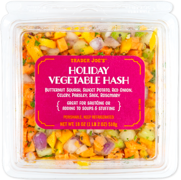

Holiday Hash

Description
One of the fastest meals to prepare. Super healthy. Reminds me of Thanksgiving. Unfortunately, the Holiday Vegetable Hash that is needed to make this is only available in the Fall and Winter months. I don't have a picture of it prepped because it's not currently in season. Makes 4 servings.
Ingredients
- 1 tbsp Organic Virgin Olive Oil
- 1 container Holiday Vegetable Hash
- 1 pound Organic Ground Turkey
- Salt and Pepper (to taste)
Steps
- In a large pot over medium-high heat, heat olive oil.
- Add vegetable hash and cook, stirring frequently, until vegetables start to soften, about 5-7 minutes.
- Add turkey and cook until turkey is browned, about 5-7 minutes.
- Salt and pepper to taste.